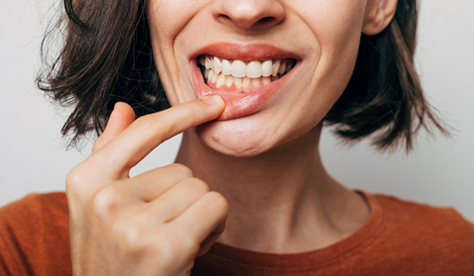
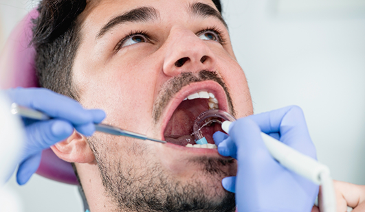
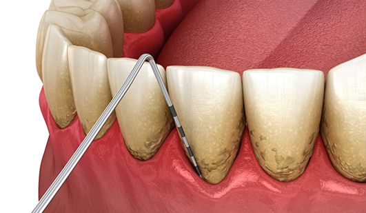
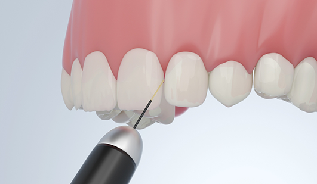
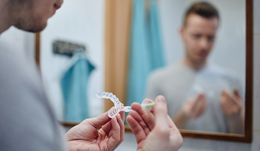
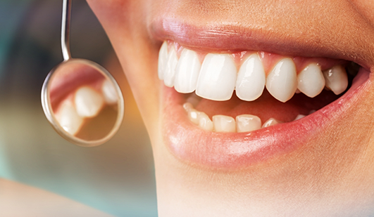
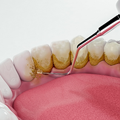

Gum Disease Treatment Hays
Improving the Health of Your Smile’s Foundation
Your gums are an essential part of your oral health and smile, as they serve as the foundation for your teeth. Our dentists and team at Lifetime Dental Care provide periodontal services to help you keep them healthy and to treat and prevent gum disease. We invite you to call us at (785) 377-0613 to learn more about gum disease treatment in Hays, and to make your appointment with our experienced dentists today.
Why Choose Lifetime Dental Care for Gum Disease Treatment?
- We Offer Sedation Dentistry for a More Comfortable Experience
- Comprehensive Dental Care Offered in One Location
- Team of Dentists with Over 40 Years Experience
What Is Gum Disease?
Gum disease, also called periodontal disease, is a degenerative condition primarily caused by bacteria found in plaque. The bacteria inflame and infect the gum tissues, and when left untreated, the gums can eventually begin to pull away from the teeth. Untreated periodontal disease can result in bone loss, tooth loss and gum tissue recession.
If this condition is not treated in the early stage, called gingivitis, it can develop into periodontitis, which is the more advanced stage of gum disease. Gingivitis is characterized by red, tender, bleeding and swollen gums; periodontitis additionally involves gum recession and can eventually lead to bone loss and tooth loss. Gingivitis can usually be controlled, and even reversed, with professional cleanings and improved at-home oral care if the condition is diagnosed and treated early.
Periodontitis, on the other hand, generally requires more involved, frequent treatment. This condition develops if gingivitis is not treated or controlled. We are pleased to provide high-quality treatment for gum disease at our office to return your smile to good health.
Symptoms of Gum Disease

If your gums are swollen, red or tender, or if your gums bleed easily, you may have periodontal disease. Other common symptoms of gum disease include loose teeth, painful chewing, persistent bad breath and receding gums that make your teeth appear longer than normal. Following an exam at our office, our dentists and team will be able to determine whether you suffer from periodontal disease.
How We Treat Gum Disease

The treatment for gum disease is based upon your specific needs. Depending on the severity of the condition, our dentists may recommend additional professional dental cleanings, improved at-home oral hygiene, scaling and root planing (deep cleanings), laser gum treatment, or gum surgery. We strive to help you restore your oral health and halt the progress of the disease. For more information on periodontal treatment, we welcome you to call or visit our office soon. We look forward to caring for your smile!
Scaling & Root Planing

Scaling and root planing is a two-step process that our patients know better as deep cleanings. First, one of our skilled dental hygienists will remove any plaque and tartar build-up along the gumline. Then, they will clear away any hardened deposits of bacteria on the roots of the teeth. This will allow the gums to healthily reattach back to the teeth to protect the roots and also minimize the risk of tooth loss.
Laser Periodontal Treatment

During your gum disease treatment, our team may employ the use of our soft tissue laser to eliminate the need for sutures and scalpels. Instead of cutting, the laser emits a concentrated light beam that vaporizes damaged tissue, leaving only healthy tissue behind. It also cauterizes the area to make for a more comfortable treatment experience, as well as minimize recovery time and post-operative discomfort.
Chao Pinhole® Technique
One of the treatments for gum disease offered at Lifetime Dental Care is the Pinhole® Surgical Technique. Using this innovative, minimally invasive treatment, our dentists can gently loosen and stretch your existing gum tissue over the roots of your teeth. There is no cutting or suturing involved, giving you a more comfortable experience and a quicker healing time.
Treating Gum Recession
The Chao Pinhole® Technique is a procedure used to correct gum recession caused by gum disease. When the gum tissue recedes due to gum disease or another condition, more of the tooth structure and tooth root are exposed. Receding gums can lead to gaps or “pockets” forming between the teeth and the gums, which makes it easy for disease-causing bacteria to accumulate and damage oral tissues.
Without proper treatment, gum recession can result in severe damage to the tissues and bone and may even lead to tooth loss. In order to prevent these serious consequences and to keep your smile healthy, our dentists may recommend the Chao Pinhole® Surgical Technique.
How the Chao Pinhole® Technique Works
Pinhole surgery is a scalpel-free and suture-free way to correct gum recession. In this treatment, a small hole is created in the gums using a needle. We then use specially designed instruments to gently loosen the gum tissue and slide it back over the area of the tooth where the gums have receded. Because this treatment does not require any cutting or stitching, it involves minimal discomfort during and after the procedure. The Chao Pinhole® Technique also gives you immediate cosmetic improvement! We welcome you to contact our friendly office today to learn if the Chao Pinhole® Surgical Technique is right for you and schedule your next appointment with our team.
Perio Protect®

Perio Protect involves a non-invasive medical plaque removal, which is used in combination with traditional plaque and bacteria removal procedures, such as scaling and root planing. For the medication portion of this treatment, our dentists will provide you with custom made Perio Trays, which will deliver prescribed medical solutions to the infected areas of your mouth. These trays are uniquely designed to place the solution into your periodontal pockets. You will receive detailed instructions on how to use your Perio Trays.
The solutions delivered into the infected areas of your mouth will manage bacteria accumulation and prevent them from regenerating between your visits to our practice. When you visit our office after beginning your Perio Protect treatment, our dentists may treat oral wounds caused by gum disease with a medication removal before continuing your treatment with scaling and root planing or another mechanical procedure.
Periodontal Maintenance

After you have completed your gum disease treatments, our dentists may recommend that you visit Lifetime Dental Care for regular periodontal maintenance. Periodontal maintenance helps keep your mouth free of bacteria and prevents the return of gum disease to your mouth.
How Periodontal Maintenance Works

Periodontal maintenance involves visiting our office on a regular basis, typically once every three months, for a professional cleaning. These treatments include thorough cleanings both above and below the gumline, removing plaque, tartar (hardened plaque, also called dental calculus), and bacteria to prevent the condition from worsening. Periodontal maintenance is recommended every three months because when biofilm is not removed, harmful bacteria begin to flourish within three to 12 weeks.
By providing a cleaning every 12 weeks (three months), we are able to remove these bacteria and keep the infection under control. To learn more about periodontal maintenance and how we can treat gum disease, we welcome you to call or visit our office today.